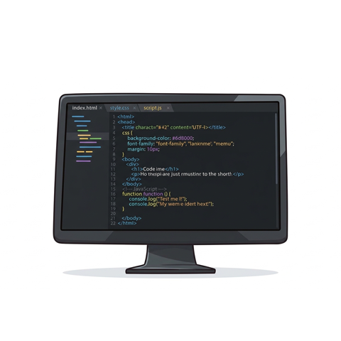
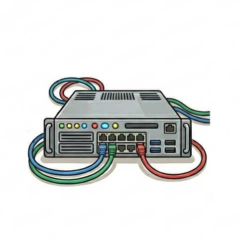
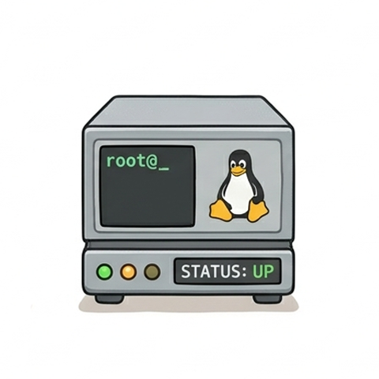
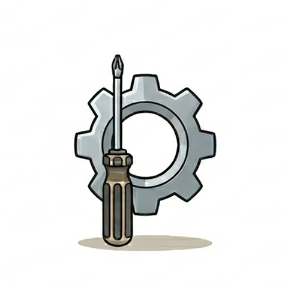

Hello
I’m an IT professional with hands-on experience in infrastructure, systems administration, networking, technical support, and IT operations. I’m currently expanding my skills into web development, with a focus on creating clean, responsive, and user-friendly websites and applications. I enjoy solving technical problems, learning new technologies, and turning ideas into practical solutions.
My Skills

Web Development
I’m currently developing my skills in frontend web development, with a focus on HTML, CSS, JavaScript, and building responsive, user-friendly websites. I’m continuously learning and working on personal projects to improve my development skills.

IT Infrastructure
Hands-on experience managing IT infrastructure, including networks, servers, firewalls, Microsoft 365, storage, backups, and business technology systems.

Systems & Server Administration
Experience supporting Windows and Linux environments, Active Directory, server infrastructure, NAS storage, virtualization, and day-to-day systems administration.

Technical Support & Problem Solving
Experienced in troubleshooting hardware, software, networking, and systems issues, with a practical approach to identifying problems and finding reliable solutions.
Outside of Technology
When I’m not working with computers, I enjoy playing guitar, singing karaoke, and enjoying a good bowl of miso ramen. I believe having interests outside of technology is just as important as continually learning new things. 😊